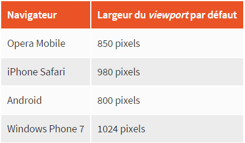

Mise en place des media queries
Il s'agit de règles et non de proprietes que l'on applique dans certaines conditions. Concrètement, on va pouvoir dire
"si la resolution de l'ecran est inferieur a tant, applique les proprietes CSS suivantes.".
Pour appliquer un media query il faut :
- soit charger une nouvelle feuille de style .css
- soit en ecrivant la regle directement dna le fichier .css habituel
Dans le premier cas, on ajoute une l'attribut "media" a la balise "link" qui nous permet de charger le fichier .css.
Dans cette attribut, on ecrit la regle pour que le fichier soit charge. On dit qu'on fait une "requete de media".
Voici un exemple : "link rel="stylesheet" media="screen and (max-width: 1280px)" href="petite_resolution.css" /"
On peut donc charger plusieurs fichiers, un par defaut et les autres pour certaines caracteristiques.
Dans le deuxieme cas, on ecrit la regle dans le fichier .css habituel avec comme en-tete : "@media screen and (max-width: 1280px)"
Les regles disponibles
- "color" : gestion de la couleur (en bits/pixel)
- "height" et "width" : hauteur et largeur de la zone d'affichage
- "device-height" et "device-width" : hauteur et largeur du peripherique
- "orientation" : portrait ou paysage
- "media" : type d'ecran de sortie. Les valeurs possibles sont :
- "screen" : ecran classique
- "handheld" : peripherique mobile
- "print" : impression
- "tv" : television
- "projection" : projecteur
- "all" : tous les types d'ecran
On peut combiner les regles a l'aide des mots suivants :
- "only" : uniquement
- "and" : et
- "not" : non
@media screen and (max-width: 1280px)
@media all and (min-width: 1024px) and (max-width: 1280px)
@media tv
@media all and (orientation: portrait)
Remarque
Les anciens navigateurs, notamment IE6, IE7 et IE8, ne connaissent pas les media queries mais sont capables
d'interpréter le début de la règle (ils savent lire @media screen par exemple). Ils vont donc lire les propriétés
CSS qui suivent même s'ils ne sont pas concernés par la règle ! Pour éviter cela, une astuce consiste à utiliser
le mot-clé only que ces vieilles versions ne connaissent pas :
« @media only screen » ne provoquera pas de bug sur les vieux navigateurs.
Plus de details ?
Pour un exemple detaille sur ce changeant, voici comment notre TP peut etre adapter sur des petits ecrans.
cours openclassroom
Quelques elements importants
- "width: auto;" : prend toute la place disponible (par defaut)
- "dsplay: block;" : transforme en block
- "border-bottom: 0;" supprime la bordure
- "display: none;" supprime l'element entier
Les mobiles
Pour s'adapter, les navigateurs mobiles affichent le site en « dézoomant », ce qui permet d'avoir un aperçu de l'ensemble de
la page. La zone d'affichage simulée est appelée le viewport : c'est la largeur de la fenêtre du navigateur sur le mobile.
En CSS, avec les media queries, si vous ciblez l'écran avec "max-width" sur un mobile, celui-ci va comparer la largeur que vous
indiquez avec celle de son viewport. Le problème, c'est que le viewport change selon le navigateur mobile utilisé !

Pour cibler les smartphones, plutôt que d'utiliser max-width, il peut être intéressant de recourir à max-device-width : c'est la
largeur du périphérique. Les périphériques mobiles ne dépassant pas 480 px de large, on pourra viser uniquement les navigateurs
mobiles avec cette media query : "@media all and (max-device-width: 480px)".
On ne cible pas avec "handheld" car aucun navigateur mobile a part opera ne le reconnait.
On peut modifier la largeur viewport du navigateur mobile avec une balise "meta" a inserer dans l'en-tete "head" du document :
"meta name="viewport" content="width=320" /"
On peut aussi utiliser cette balise pour modifier ma facon dont le contenu de la page s'organise sue les mobiles. Pour une lecture
facile, on peut demander a ce que le viewport soit le meme que la largeur de l'ecran :
"meta name="viewport" content="width=device-width" /"